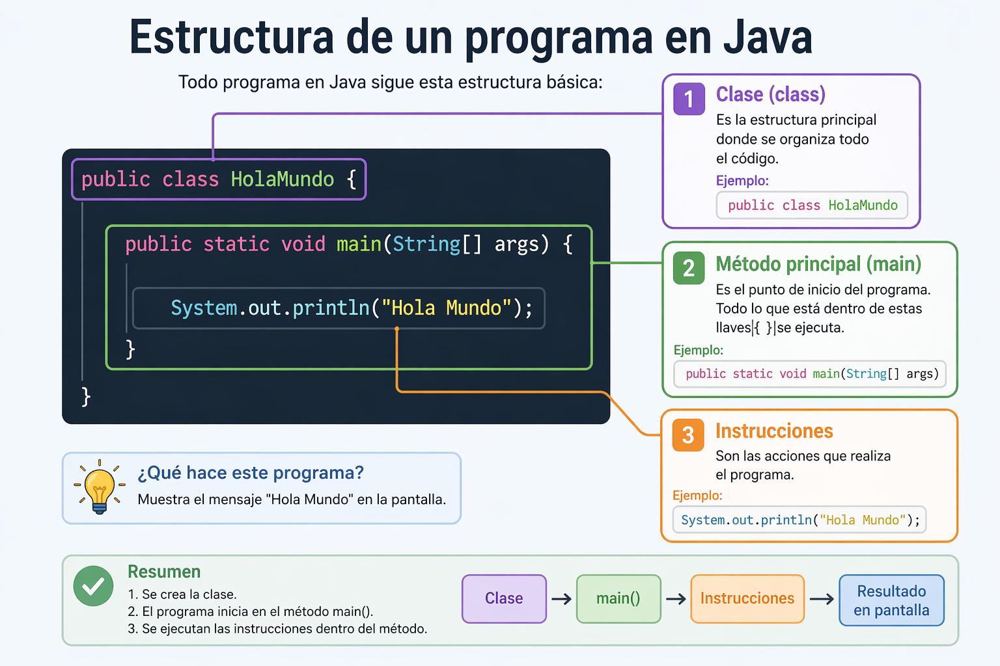

En esta sección aprenderás los primeros conceptos para comenzar a programar en Java. Aquí conocerás qué es un programa y verás tu primer ejemplo llamado Hola Mundo.
Un programa es un conjunto de instrucciones que una computadora puede entender y ejecutar para realizar una tarea. Estas instrucciones se escriben utilizando un lenguaje de programación como Java.
Por ejemplo, un programa puede servir para realizar cálculos, mostrar información en pantalla, crear aplicaciones o resolver problemas.
El programa "Hola Mundo" es uno de los ejemplos más conocidos cuando se aprende un lenguaje de programación. Su objetivo es mostrar un mensaje sencillo en la pantalla para comprobar que el programa funciona correctamente.
public class HolaMundo {
public static void main(String[] args) {
System.out.println("Hola Mundo");
}
}
Cuando se ejecuta este programa, la computadora mostrará el mensaje Hola Mundo en la pantalla.

Un programa en Java sigue un orden. Aquí se explica paso a paso:
1. Clase (class)
Es donde comienza el programa. Aquí se organiza todo el código.
Ejemplo: public class HolaMundo
2. Método principal (main)
Es la parte donde inicia el programa. Todo lo que está dentro se ejecuta.
Ejemplo: public static void main(String[] args)
3. Instrucciones
Son las acciones que realiza el programa.
Ejemplo: System.out.println("Hola Mundo");
En resumen: el programa inicia en el método main y ejecuta las instrucciones que están dentro de él.
Si deseas probar este código sin instalar programas, puedes practicar Java directamente en internet utilizando el compilador en línea de Programiz.
Probar código Java